Captures 100% authentiques du runtime Glucose (build Vite / Chromium headless 1920×1080). Garantit les mesures réelles, le positionnement des docks, l'état des tiroirs et l'ambiance visuelle exacte.
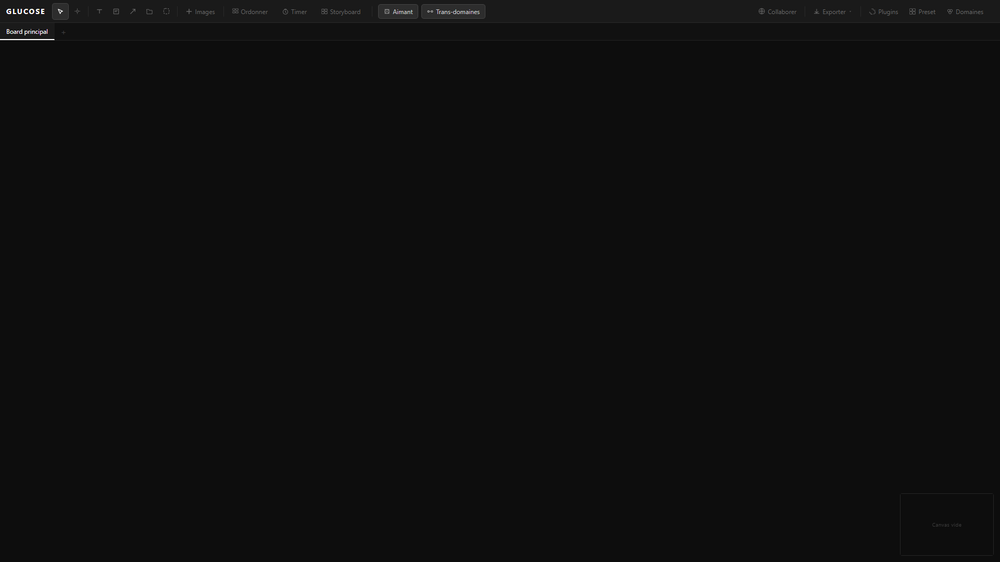
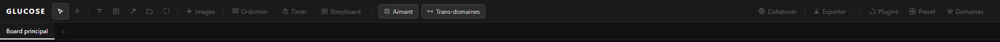
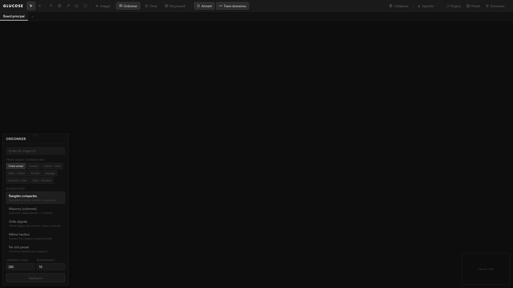
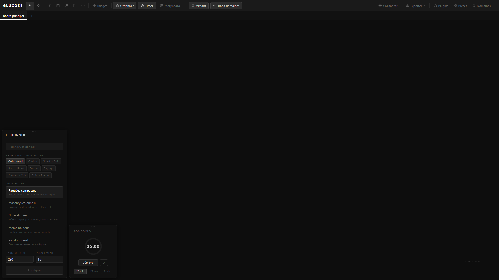
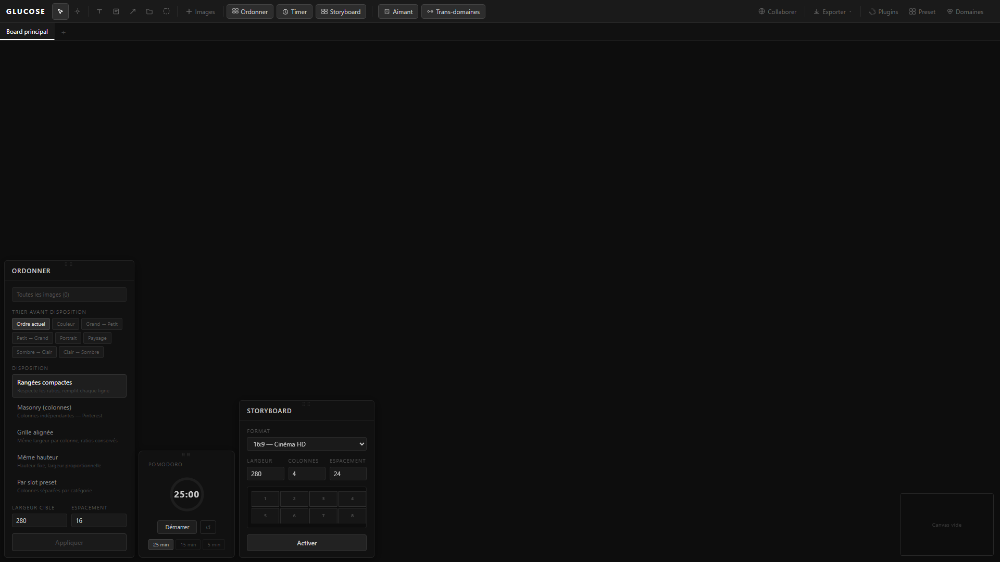
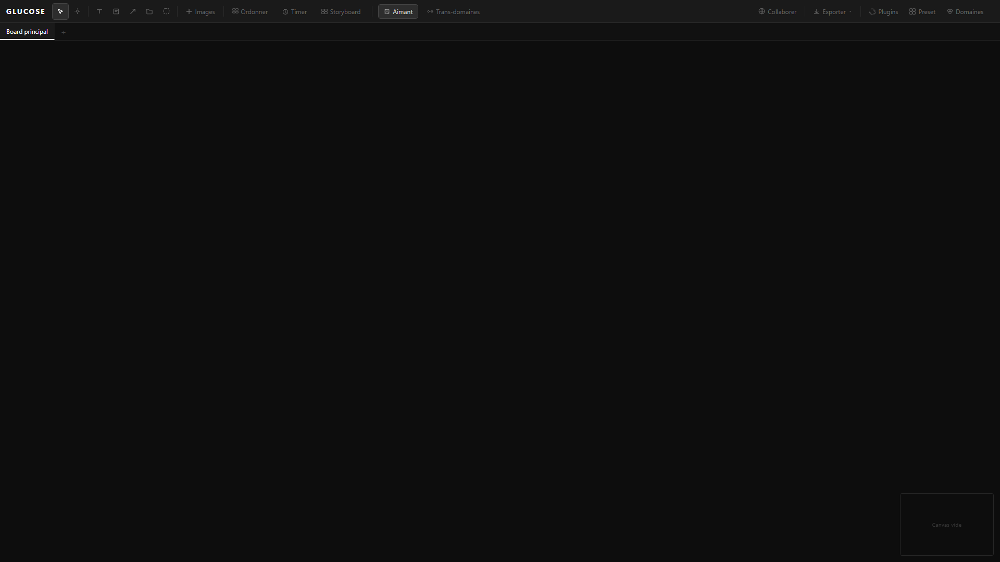
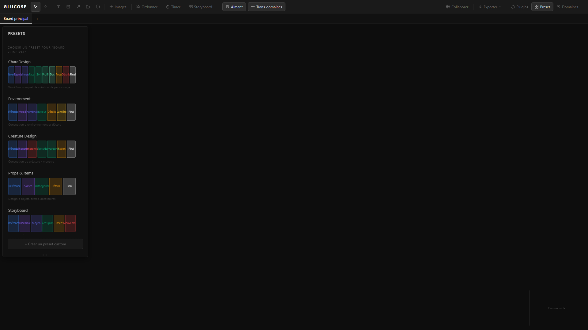
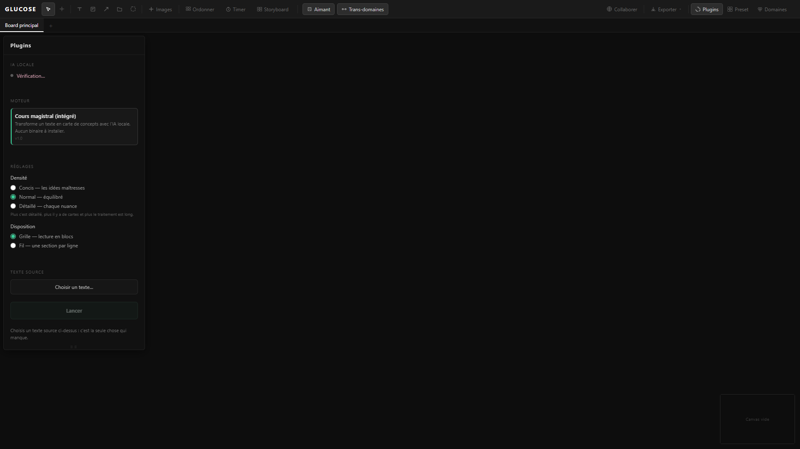
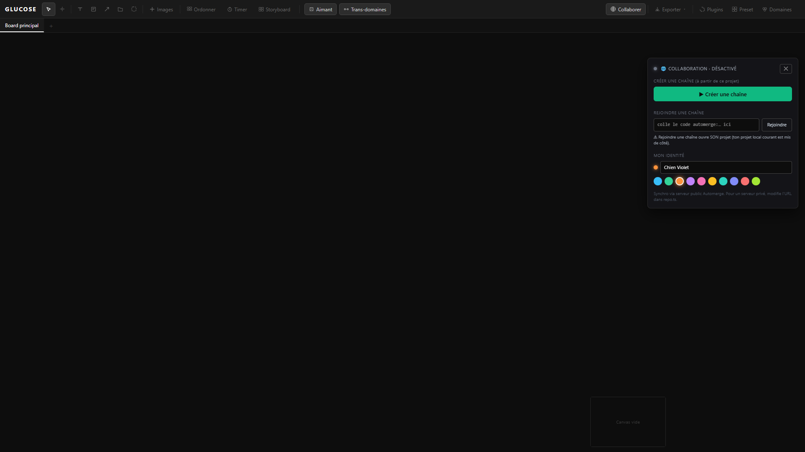
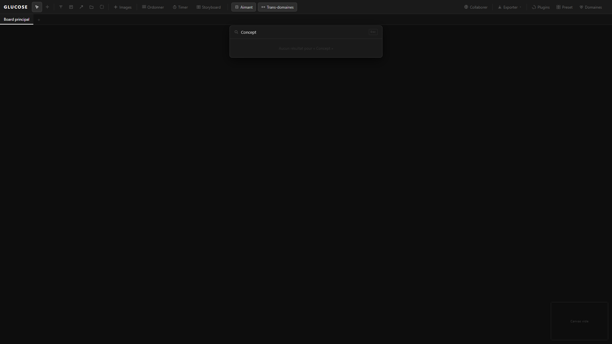
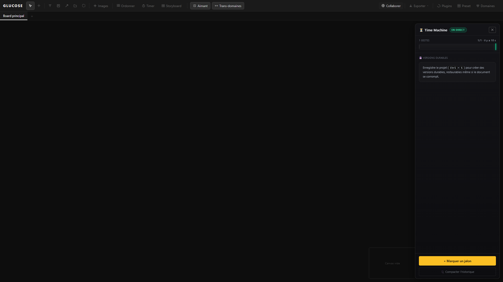
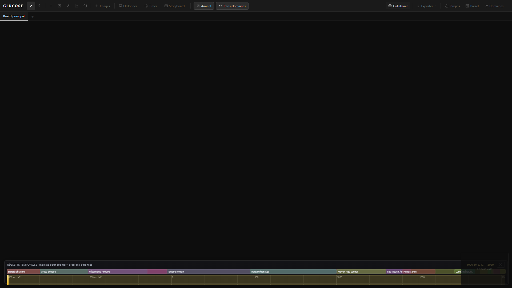
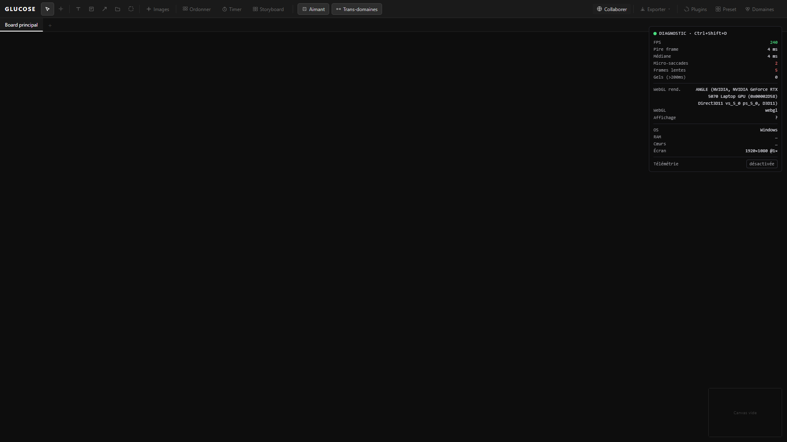
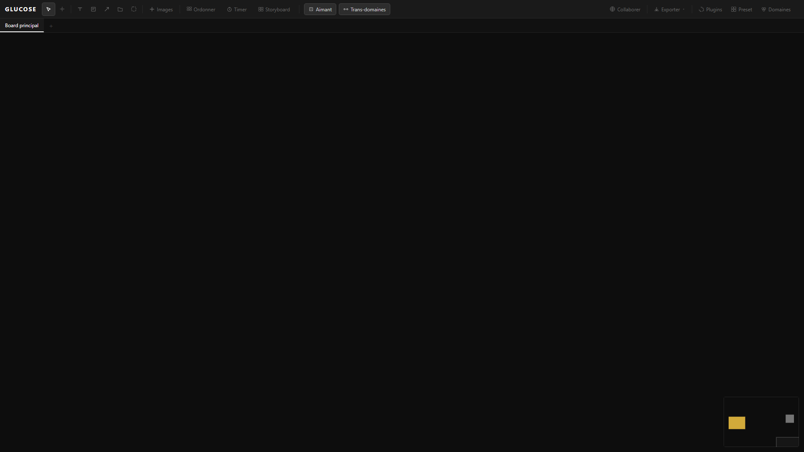
Toujours dissocier l'espace monde (zoom) de l'espace écran pour les bordures et poignées.